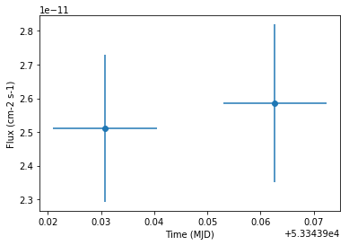

This is a fixed-text formatted version of a Jupyter notebook.
You can contribute with your own notebooks in this GitHub repository.
Source files: light_curve.ipynb | light_curve.py
Example of light curve¶
Introduction¶
This tutorial explain how light curves can be computed with Gammapy.
Currently this notebook is using simulated data from the Crab Nebula. We will replace it with a more interesting dataset of a variable source soon.
The main classes we will use are:
Setup¶
As usual, we’ll start with some setup…
In [1]:
%matplotlib inline
import astropy.units as u
from astropy.units import Quantity
from astropy.coordinates import SkyCoord, Angle
from regions import CircleSkyRegion
from gammapy.utils.energy import EnergyBounds
from gammapy.data import Target, DataStore
from gammapy.spectrum import SpectrumExtraction
from gammapy.spectrum.models import PowerLaw
from gammapy.background import ReflectedRegionsBackgroundEstimator
from gammapy.image import SkyImage
from gammapy.time import LightCurve, LightCurveEstimator
Extract spectral data¶
First, we will extract the spectral data needed to build the light curve.
In [2]:
# Prepare the data
data_store = DataStore.from_dir('$GAMMAPY_EXTRA/datasets/hess-crab4-hd-hap-prod2/')
obs_ids = [23523, 23526]
obs_list = data_store.obs_list(obs_ids)
In [3]:
# Target definition
target_position = SkyCoord(ra=83.63308, dec=22.01450, unit='deg')
on_region_radius = Angle('0.2 deg')
on_region = CircleSkyRegion(center=target_position, radius=on_region_radius)
target = Target(on_region=on_region, name='Crab', tag='ana_crab')
In [4]:
# Exclusion regions
exclusion_file = '$GAMMAPY_EXTRA/datasets/exclusion_masks/tevcat_exclusion.fits'
allsky_mask = SkyImage.read(exclusion_file)
exclusion_mask = allsky_mask.cutout(
position=target.on_region.center,
size=Angle('6 deg'),
)
In [5]:
# Estimation of the background
bkg_estimator = ReflectedRegionsBackgroundEstimator(
on_region=on_region,
obs_list=obs_list,
exclusion_mask=exclusion_mask,
)
bkg_estimator.run()
In [6]:
# Extract the spectral data
e_reco = EnergyBounds.equal_log_spacing(0.7, 100, 50, unit='TeV') # fine binning
e_true = EnergyBounds.equal_log_spacing(0.05, 100, 200, unit='TeV')
extraction = SpectrumExtraction(
obs_list=obs_list,
bkg_estimate=bkg_estimator.result,
containment_correction=False,
e_reco=e_reco,
e_true=e_true,
)
extraction.run()
extraction.compute_energy_threshold(
method_lo='area_max',
area_percent_lo=10.0,
)
/home/jlenain/local/src/python/anaconda/envs/cta/lib/python3.5/site-packages/astropy/units/quantity.py:641: RuntimeWarning: invalid value encountered in true_divide
*arrays, **kwargs)
Light curve estimation¶
In [7]:
# Define the time intervals. Here, we only select intervals corresponding to an observation
intervals = []
for obs in extraction.obs_list:
intervals.append([obs.events.time[0], obs.events.time[-1]])
In [8]:
# Model to compute the expected counts (generally, parameters come from the fit)
model = PowerLaw(
index=2. * u.Unit(''),
amplitude=2.e-11 * u.Unit('1 / (cm2 s TeV)'),
reference=1 * u.TeV,
)
In [9]:
# Estimation of the light curve
lc_estimator = LightCurveEstimator(extraction)
lc = lc_estimator.light_curve(
time_intervals=intervals,
spectral_model=model,
energy_range=[0.7, 100] * u.TeV,
)
I am hacking lightcurve in gammapy
Results¶
The light curve measurement result is stored in a table. Let’s have a look at the results:
In [10]:
print(lc.table.colnames)
['time_min', 'time_max', 'flux', 'flux_err', 'livetime', 'n_on', 'n_off', 'alpha', 'measured_excess', 'expected_excess']
In [11]:
lc.table['time_min', 'time_max', 'flux', 'flux_err', 'livetime', 'n_on', 'n_off', 'alpha', 'measured_excess', 'expected_excess']
Out[11]:
<Table length=2>
| time_min | time_max | flux | flux_err | livetime | n_on | n_off | alpha | measured_excess | expected_excess |
|---|---|---|---|---|---|---|---|---|---|
| 1 / (cm2 s) | 1 / (cm2 s) | s | |||||||
| float64 | float64 | float64 | float64 | float64 | int64 | int64 | float64 | float64 | float64 |
| 53343.9210069 | 53343.9405019 | 2.51134593372e-11 | 2.18682649576e-12 | 1579.27251851 | 153 | 61 | 0.166666666667 | 142.833333333 | 161.363102545 |
| 53343.9530032 | 53343.9724047 | 2.5848461759e-11 | 2.34244310984e-12 | 1566.41994765 | 151 | 86 | 0.166666666667 | 136.666666667 | 150.006163136 |
In [12]:
lc.plot()
Out[12]:
<matplotlib.axes._subplots.AxesSubplot at 0x7f6019baa208>

Exercises¶
- Change the assumed spectral model shape (e.g. to a steeper power-law), and see how the integral flux estimate for the lightcurve changes.
- Try a time binning where you split the observation time for every run into two time bins.